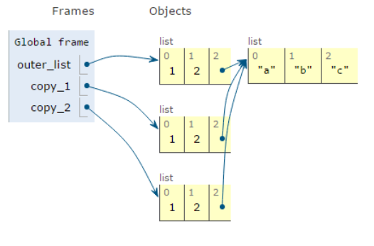
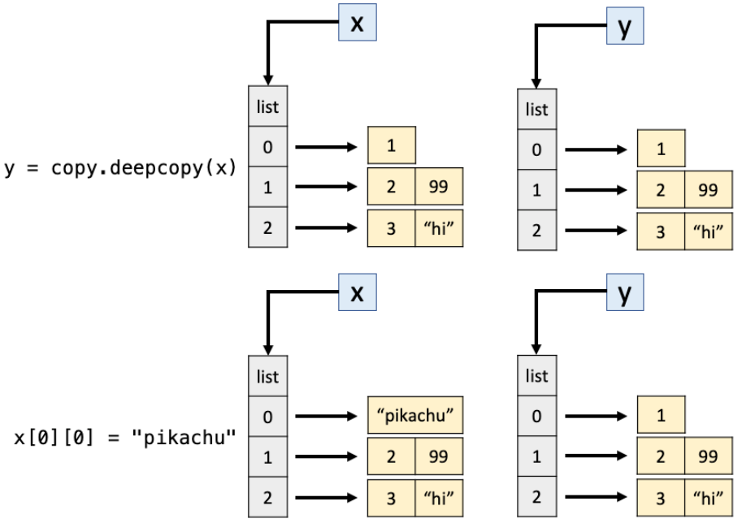

Još malo o stringovima i listama
Metode upper() i lower().
Pretvaraju string u string sa svim velikim, odnosno svim malim slovima:
s1 = "neki kratak niz"
s2 = "DRUGI NIZ"
print(s1.upper())
print(s2.lower())
s1 # Metoda nije promenila vrednost stringa s1
NEKI KRATAK NIZ
drugi niz
'neki kratak niz'
Metod split()
String pretvara u listu (podrazumevana vrednost za paramater sep je praznina tj. sep=' ').
s1.split()
['neki', 'kratak', 'niz']
Metod join()
Spaja u jedan string proizvoljan broj stringova unutar jedne liste. Pozivamo ga na sledeći način:
"char".join(lista)
Promenljivom char označavamo kako želimo da unutar stringa razdvojimo elemente liste (char predstavlja razmak ili bilo koji drugi karakter koji razdvajmo elemente liste). Ako želimo da ne ostavimo razmak pišemo samo "" .
s1 = "neki kratak niz"
lista = s1.upper().split() # Primetite kako metode bez problema vezujemo jednu na drugu
print(lista)
spojeno = "".join(lista)
print(spojeno)
['NEKI', 'KRATAK', 'NIZ']
NEKIKRATAKNIZ
spojeno = " ".join(lista)
print(spojeno)
NEKI KRATAK NIZ
spojeno = "\n".join(lista)
print(spojeno)
NEKI
KRATAK
NIZ
Ako nam je nekada od interesa da svaki karakter pretvorimo u listu, to možemo jednostavimo da uradimo koristeći funkciju list. Na ovaj način, u listi se nalaze i specijalni karakteri, razmaci, itd.
s1 = """neki kratak
niz"""
lista = list(s1)
lista # primetite kako je tu i novi red, sa oznakom \n
['n', 'e', 'k', 'i', ' ', 'k', 'r', 'a', 't', 'a', 'k', '\n', 'n', 'i', 'z']
Kviz 1. Šta će biti izlaz sledećeg koda?
b1 = 1235
l1 = list(b1)
l1
Rešenje
TypeError - Pajton će javiti grešku, jer b nije string (ili neki iterabilni objekat, o čemu ćemo kasnije), već ceo broj.
Metod find()
Vraća kao vrednost najniži indeks stringa za koji smo našli podstring koji nas interesuje. Opcioni parametar je da kažemo interpreteru odakle da počne sa pretragom. Ako ga ne navedemo traži se prvo pojavljivanje.
d = "Velika je nesreća kad čovek ne zna šta hoće, a prava katastrofa kad ne zna šta može."
print(d.find('ne'))
d[10]
10
'n'
Kviz 2. Probajte da nađete indeks gde se „ne” pojavljuje drugi put.
Rešenje
d.find("ne",d.find("ne")+1) # Naravno, ovde koristimo informaciju koju smo dobili malopre
Metode strip(), rstrip(), lstrip()
Metod strip() vraća novi string iz koga su uklonjeni početni i krajnji prazni prostori (razmaci, tabovi, novi red) ili, po potrebi, bilo koji zadati skup karaktera. Ne menja originalni string, već vraća kopiju.
Metode rstrip i lstrip rade isto samo sa desne, odnosno leve strane, respektivno.
string = " Pajton "
string.strip()
'Pajton'
Parametri unutar poziva metode znači da uklanjamo sve karaktere koje smo naveli sa kraja teksta:
heading = 'Deo I. Poglavlje #15.....'
heading.strip('.')
'Deo I. Poglavlje #15'
heading.rstrip('.5#1')
'Deo I. Poglavlje '
Formatiranje stringova
Često nam je potrebno da string sadrži brojeve, vrlo verovatno i promenljive koje će zavisiti od inputa korisnika. Proći ćemo dva načina:
Metod
format()f-stringovi
Metod format()
Vraća formatiranu vrednost stringa za koji dozvoljava delove koje će zameniti promenljivama.
Vitičaste zagrade služe da ukažu da tu treba da ide neka vrednost koja se nalazi kao argument
.formatmetode
ime = 'Petar'
starost = 23
"Zdravo, ovo je {}, i ima {} godine.".format(ime, starost)
Ako naznačimo o kojim promenljivama je reč, unutar poziva metode format ne moramo voditi računa o redosledu.
print('{quantity} {item} cost ${price}'.format(price = 1.74, quantity = 6, item = 'bananas'))
6 bananas cost $1.74
Alternativno, možemo i unutar stringa definisati redosled indeksiranjem argumenata metode format.
print('{1} {2} cost ${0}'.format(1.74, 6, 'bananas'))
6 bananas cost $1.74
Kod složenijih ispisa se često može desiti da vam se broj argumenata i zagrada ne poklapa i zato je bolje imenovati vrednosti u zagradama.
'{}{}{}{}'.format('a','b','c')
---------------------------------------------------------------------------
IndexError Traceback (most recent call last)
Cell In[14], line 1
----> 1 '{}{}{}{}'.format('a','b','c')
IndexError: Replacement index 3 out of range for positional args tuple
Istraži
Ako želite da saznate više o
format()metodi, preporučujemo sledeće tekstove:Dokumentacija klase
string: https://docs.python.org/3/library/string.htmlZanimljiv vodič na RealPython: https://realpython.com/python-formatted-output/
f-stringovi
Najnoviji način zapisivanja stringova. Pojavio se sa Python 3.6 verzijom. Rešio je niz nekih nedoslednosti i uveo funkcionalnosti koje nisu postojale kod .format() metode.
Iako format metod zgodan, ume da bude jako težak za čitanje kod složenijih zapisa. Primer, i najveći deo priče o f-stringovima preuzeli smo sa sledećeg SAJTA.
ime = "Eric"
last_name = "Idle"
age = 78
profession = "comedian"
affiliation = "Monty Python"
print(("Hello, {first_name} {last_name}. You are {age}. " +
"You are a {profession}. You were a member of {affiliation}.") \
.format(first_name=ime, last_name=last_name, age=age, \
profession=profession, affiliation=affiliation))
Hello, Eric Idle. You are 78. You are a comedian. You were a member of Monty Python.
f-stringovi započinju slovom f i imaju olakšanu formu pa bi isti kod izgledao sada ovako:
first_name = "Eric"
last_name = "Idle"
age = 78
profession = "comedian"
affiliation = "Monty Python"
print(f"Hello, {first_name} {last_name}. You are {age}."
f"You are a {profession}. You were a member of {affiliation}.")
Hello, Eric Idle. You are 78.You are a comedian. You were a member of Monty Python.
Specifikacija ispisa brojeva:
Nekada nam je važno da brojevi budu ispisani u specifičnom formatu. Na primer, imamo broj sa pokretnim zarezom, ali nas interesuje da ga zapišemo sa dve decimale. Koncept f string nam omogućava lako baratanje sa zapisom.
import math as m
print(f"Iako je u math modulu pi ispisano kao {m.pi}, možemo ga zapisati i sa dve decimale {m.pi:.2f}")
Iako je u math modulu pi ispisano kao 3.141592653589793, možemo ga zapisati i sa dve decimale 3.14
f-stringovi omogućavaju i poziv metoda za promenljive unutar zagrada
ime = "Marija"
print(f"Ne pričamo o specifičnoj osobi, možda je smislenije reći {ime.lower()}?")
# Probajte da razmislite, šta bi se desilo da nismo stavili zagrade posle lower?
Ne pričamo o specifičnoj osobi, možda je smislenije reći marija?
Istraži
Igrajte se sa stringovima i ispitajte njihovu funkcionalnost
Na sledećem linku možete pogledati zvaničnu dokumentaciju o f-stringovima.
Koristeći onlajn materijale saznajte šta radi
!r, gde i kako se koristi u f-stringovima.
Kopiranje listi
Najveći deo priče o kopiranju listi preuzet je iz knjige Python Programming for Data Science . Veoma je zanimljiva jer ćemo na predmetu pokriti najveći deo tema koje se nalaze u njoj pa je možete baš često koristiti i vraćati joj se.
Podestimo se: Ako se jednoj promenljivoj tipa liste dodeli druga lista, onda one dele isti memorijski prostor. Videli smo da se taj problem može prevaziće primenom metoda listi copy.
a = [1, 2, 3]
b = a.copy()
b.append(4)
print(a)
print(b)
[1, 2, 3]
[1, 2, 3, 4]
Ali šta ako je unutar jedne lista druga lista? Da li će to biti problem? Šta će biti izlaz sledećeg koda?
x = [[1], [2,3,4], [3, "hi"]]
y = x.copy()
x[2][1] = "good bye" # Umesto 'hi' hoćemo 'good bye'
y
Odgovor:
[[1], [2, 3, 4], [3, 'good bye']]
Dakle, metod copy() ne radi isto kao što je to bilo na prethodnom primeru. Metod copy() pravi plitku kopiju liste (shallow copy). To znači:
napravi se nova lista u memoriji,
elementi se samo referenciraju, ne kopiraju dubinski.
Drugim rečima, copy() kopira strukturu liste, ali ne i objekte unutar nje.
{kind=link}

Slika 6. Metod copy() pravi plitku kopiju liste (shallow copy)
Kako prevazilazimo ovaj problem?
Odgovor koji ćemo često koristiti - importujemo modul koji je rešio ovaj nedostak. Modul copy sadrži dve korisne funkcije:
Funkcija
copyima iste funkcionalnosti kao i ugrađena funkcija.Funkcija
deepcopykoja rešava problem koji smo uočili
Pokušaćemo sada isti kod da pokrenemo, ali koristeći modul copy i njegov metod deepcopy:
import copy
x = [[1], [2, 99], [3, "hi"]]
y = copy.deepcopy(x)
x[0][0] = "pikachu"
y
[[1], [2, 99], [3, 'hi']]
Na ovaj način dobili smo možda i očekivanu strukturu
{kind=link}

Slika 7. deepcopy() → pravi potpuno nezavisnu (duboku) kopiju celog stabla objekata.
Koncepti plitke i duboke kopije vrlo su netrivijalni i često se zanemare prilikom primene. Igrajte se i pokušajte da napravite što zanimljivije primere.
Kviz 2.
Pokušajte da date odgovor na pitanje šta je izaz sledećeg koda, a da ne pokrećete sam kod?
import copy
x = [[1], [2, 99], [3, "hi"]]
y = copy.copy(x)
y.append(5)
print(x)
print(y)
Odgovor:
[[1], [2, 99], [3, 'hi']]
[[1], [2, 99], [3, 'hi'], 5]